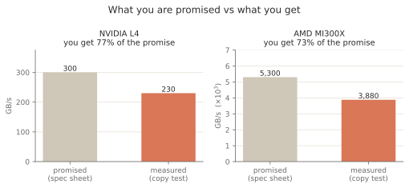
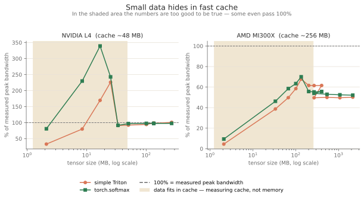
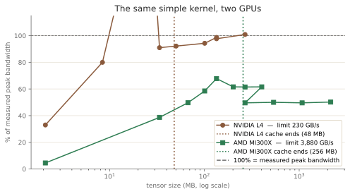

Softmax is the textbook memory-bound kernel: read a row, write a row, almost no arithmetic in between. So its performance question is simple to state — what fraction of the machine's memory bandwidth does it actually reach?
I set out to answer that on two very different GPUs, an NVIDIA L4 and an AMD MI300X, and to close whatever gap I found. I tested three optimizations. The data rejected all three. The reason turned out to be more interesting than any speedup: for most of the shapes I was measuring, I was not measuring memory at all.
This post is that investigation, in order.
The operation, and the right metric
For each row, softmax finds the maximum, subtracts it (for numerical stability), exponentiates, and divides by the sum. One read of the row, one write, a handful of flops. Arithmetic intensity well below one flop per byte, which puts it firmly in the memory-bound regime.
So milliseconds are the wrong unit. The honest metric is achieved bandwidth as a fraction of the hardware's real limit. A kernel at 95% of memory bandwidth is done; one at 30% has headroom — if the measurement is trustworthy. That last condition is where this went sideways.
The ceiling is not the spec sheet
To report a fraction of bandwidth I first needed the denominator. The datasheet gives the L4 300 GB/s, but a datasheet number assumes conditions real code never sees. So I measured it: a large contiguous copy — read an array, write another — is the simplest bandwidth-bound workload there is, and a fair estimate of the practical ceiling.
The L4 reached 230 GB/s, about 77% of its 300 GB/s rating. The MI300X reached roughly 3,880 GB/s against a 5,300 GB/s spec, a near-identical 73%.

Spec-sheet bandwidth against what a plain copy actually reaches, on both GPUs.
Both cards deliver about three quarters of the sticker number. That gap is routine, but it is not optional to account for: normalising against 300 instead of 230 would have made every L4 result in this post about a quarter too low. Measure your own ceiling.
An anomaly worth chasing
With a measured ceiling in hand, I ran a simple Triton softmax — one program per
row, safe max-subtract, nothing clever — against torch.softmax across a range
of shapes. On large tensors they matched. On a small one, a 1024 by 1024 tensor
of about 2 MB, they did not:
| simple Triton | torch.softmax | |
|---|---|---|
| 1024x1024 (2 MB) | 33.0% of peak | 80.9% of peak |
A 2.5x difference on the same operation. Two kernels computing identical results, one far behind — the obvious reading is that torch's kernel does something on small inputs that mine does not. That is a concrete, testable claim, so I formed hypotheses about what that something was and tested them one at a time.
Three hypotheses, three rejections
Hypothesis 1: too little occupancy. One program per row means 1024 programs for this tensor. Perhaps too few resident warps to hide memory latency. I gave each program a tile of rows to raise occupancy. It did not help — and the reason is instructive: a tile of rows forces each program to hold a larger block in registers, which lowers how many can be resident at once. I swept the tile size across 1, 2, 4, 8, 16 rows; every setting stayed within a point or two of the baseline. The occupancy I added, I also took away.
Hypothesis 2: launch overhead. Starting 1024 programs for such small units of work might cost more than the work itself. I switched to a grid-stride design: a fixed, smaller number of programs, each looping over its share of rows. That did not help either, and it cost a little on large tensors, where the extra loop machinery is pure overhead.
Hypothesis 3: a poor warp count. Triton picks warps-per-block heuristically;
maybe its choice was wrong for a thin row. I swept num_warps over 1 through 32.
This is where I nearly fooled myself. One reading showed the small tensor moving
from about 35% to 47% — a tempting result. But the full sweep had no trend at
all: every count from 1 to 16 landed between 44% and 47%. If changing a knob
across a 16x range does nothing monotonic, the knob is not the cause. The "35%" I
had compared against came from a different run; small-tensor timings wander by
ten points between sessions, and I had mistaken that wander for a gain.
Three hypotheses about the kernel, three rejections. The gap held. So I stopped proposing kernel changes and interrogated the measurement instead.
Interrogating the measurement
Rather than ask how to make the small case faster, I asked whether the gap was a property of the kernel or of the tensor size. I swept the same comparison from 2 MB up to 268 MB and watched the ratio:
| size | simple Triton | torch |
|---|---|---|
| 2 MB | 33.0% | 80.9% |
| 8 MB | 80.0% | 229.8% |
| 17 MB | 169.6% | 339.2% |
| 25 MB | 226.1% | 242.8% |
| 34 MB | 91.0% | 91.6% |
| 50 MB | 92.2% | 96.9% |
| 134 MB | 98.7% | 97.7% |
| 268 MB | 100.9% | 97.7% |
The gap is a function of size. It closes as the tensor grows, and by 134 MB the two kernels are within a percent. On the largest tensor the simple kernel is marginally ahead.
The middle rows are impossible on their face: torch reaches 339% of peak at 17 MB. A percentage is achieved bandwidth over the HBM ceiling of 230 GB/s, and nothing moves data faster than HBM allows — unless it never reaches HBM. That is what happens. The L4 has about 48 MB of L2 cache, far faster than its HBM. A 17 MB tensor fits inside it, so the kernel reads and writes from cache; the raw figure is around 780 GB/s of cache bandwidth, which I then divide by the memory ceiling. Numerator and denominator describe two different memories, so the ratio sails past 100%. A reading above 100% is not a broken measurement — it is proof the data never touched HBM.
The denser sweep shows the trap has a sharp shape, not a gentle one. The inflation climbs from 2 MB, peaks near 17 MB, holds high through 25 MB, then collapses between 25 and 34 MB — from 243% down to 92% — and stays honest from there on. Two things are worth noting about that cliff. First, it lands near 30 MB, well below the 48 MB cache size: softmax reads each element about twice (once to find the max, once to normalise), so the tensor must be small enough to stay resident across both passes, not merely fit once. Second, the very smallest tensor is not the most inflated. At 2 MB the simple kernel reaches only 33% — there are just 1024 rows, too few to keep the GPU busy, so underutilisation drags the number down even though the data is fully cached. The cache pushes the number up and starvation pushes it down; only past ~30 MB do both effects clear and the figure becomes a clean HBM measurement.

Percentage of measured peak bandwidth against tensor size. In the shaded region the data fits in cache, so the numbers describe the cache and can pass 100%. Once the data spills cache, the two kernels agree.
Inside the shaded region the tensor fits in cache and the numbers describe the cache — which is why they can exceed 100%. Outside it, both kernels converge to 95-99% of the real ceiling. There was never a kernel gap to close. torch's kernel is better at exploiting the cache on tiny inputs, a genuine but narrow difference; on any tensor large enough to be memory-bound, the simple kernel was already at the roofline.
A second GPU changes the answer
The L4 is a modest card. I repeated the study on an MI300X — 304 compute units, roughly 17x the bandwidth — expecting the same shape of result one tier up. Instead the kernel behaved differently:
| size | simple Triton | torch |
|---|---|---|
| 2 MB | 4.5% | 9.4% |
| 34 MB | 38.7% | 46.2% |
| 67 MB | 49.7% | 58.5% |
| 134 MB | 67.8% | 70.0% |
| 268 MB | 61.5% | 55.3% |
| 537 MB | 50.0% | 53.0% |
| 2.1 GB | 50.2% | 52.1% |
The kernel that reached 99% on the L4 never gets close here. It climbs to a hump
of about 70% near 134 MB, then settles onto a plateau of about 50% that holds
from 268 MB out to 2 GB. torch.softmax tracks it the whole way. And note what
is missing: nothing on this GPU crosses 100%. The L4's cache mirage does not
appear at all, even though I sampled densely across the MI300X's much larger
cache.

The same simple kernel on both GPUs. Past each dotted line the data no longer fits that GPU's cache. The L4 reaches its limit; the MI300X flattens at about half of its own.
Two conclusions follow. First, this is not a code deficiency: when the vendor library hits the identical wall, the wall is architectural, not in my kernel. Second, the cause is the shape of the work. Each row is 512 elements — a tiny unit — and to saturate 304 CUs and nearly 4,000 GB/s you need far more work in flight than thin rows supply. On a GPU this wide, a light memory-bound operation simply cannot reach the roofline, regardless of how the kernel is written.
I expected the opposite. The MI300X's last-level cache is about 256 MB, five times the L4's, so I assumed the mirage would be larger here — dishonest numbers stretching to even bigger tensors. The dense sweep says no. The number never passes 100%; it just humps gently to 70% and falls back.
The reason is the same starvation that caps the plateau, and it is the more interesting half of the two-GPU story. A mirage needs two things at once: data that sits in cache, and enough parallel work to turn that fast cache into throughput. The L4 has both in its mid-range, so cache speed dominates and the number soars past 100%. The MI300X is so wide — 304 CUs — that a thin-row softmax never supplies enough work to use it, at any size. Starvation dominates everywhere, so even when the data is fully cached the kernel cannot convert that into bandwidth, and the number stays capped well under the ceiling. The same width that holds the plateau at 50% is what prevents the cache mirage from ever forming. One GPU shows the trap dramatically; the other cannot show it at all, for a single shared reason.
Methodology
The investigation set out to make a kernel faster and instead produced a procedure for deciding whether it can be. Four points I would now treat as non-negotiable when benchmarking a memory-bound kernel:
- Measure the bandwidth ceiling; do not use the datasheet. Both cards delivered about 73-77% of their rated bandwidth on a plain copy.
- Keep the working set larger than the last-level cache. Below it you are measuring cache, not memory — and readings above 100% of HBM bandwidth are the unmistakable sign that you are.
- Compare against a tuned reference. When the simple kernel and
torch.softmaxagreed to within a couple of percent, that agreement was the evidence that no headroom remained. - Compare only within a single run. Small-tensor timings drifted ten points between sessions; a gain measured against a previous run is not a gain.
And a structural point: when a kernel and the vendor library plateau at the same fraction of peak, the limit is the operation meeting the machine, not the implementation. A thin-row softmax cannot fill an MI300X. Recognising that is worth more than another failed optimisation, because it redirects the effort — toward fusing the operation into something with more arithmetic per byte, or batching it, rather than tuning a kernel that is already doing all it can.
Two things I did not explain
The data left me with two open questions, and I would rather name them than paper over them.
First, the shape of the L4 cache mirage. The inflation does not fade gently as the tensor approaches the 48 MB cache; it peaks near 17 MB, holds, then collapses between 25 and 34 MB — a cliff that sits below the cache size. My working guess is that softmax reads each row about twice, so the tensor must be small enough to stay resident across both passes rather than merely fit once. That is testable — change the number of passes and see if the cliff moves — and it is where I am taking this next.
Second, a smaller curiosity. In the 200-400 MB band on the MI300X the simple
kernel edges ahead of torch.softmax, reversing their usual order. It tracks
row width rather than tensor size: the crossover appears on the 1024-wide rows,
not the 512-wide ones. I noticed it; I have not chased down why.
The kernels, benchmarks, and per-GPU CSVs are here: github.com/midiareshadi/kernel-curiosity